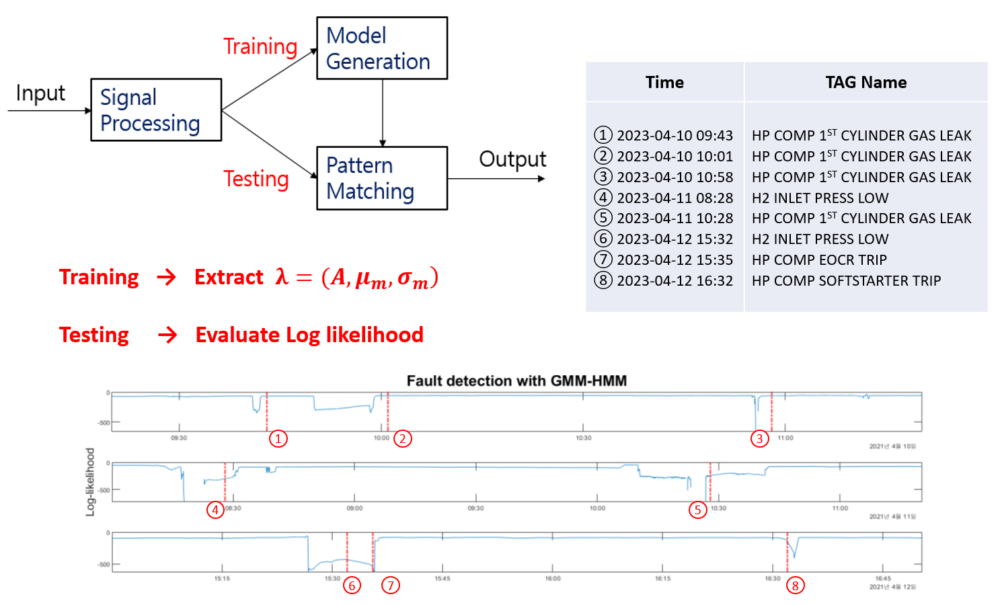
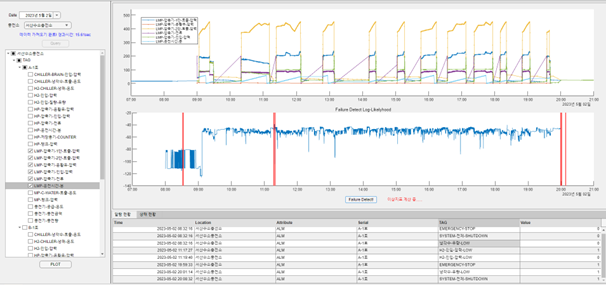

수소통합모니터링시스템 개발 및 고도화(자체 프로젝트, Apr. 2020 ~ Present)
설비모니터링 웹 대시보드 구축 - Streamlit
RCM 기반 설비분류체계 및 PI System 실시간 DB 구축
생성형 AI 기반 진단 솔루션 개발
액화수소 충전소 구축 연계 안전성 평가/실증 및 안전기준 개발 (산업부, Apr. 2022 ~ Present)
과제번호: 20227310100010
액체수소충전소 CAPEX & OPEX 자료 확보 및 경제성 분석
액체수소충전소 System Engineering 수행
천연가스설비 신뢰성 향상을 위한 Big Data 시스템 개발 (자체 연구과제, Jan. 2019 ~ Mar. 2022)
상태이상감지 및 회전기기 열화단계 분류 모델 개발
원심펌프 임펠러 가공 시 성능변화 예측 모델 개발
방폭형 수소누출 영상탐지장치 개발 (공동연구과제, 에스엠인스트루먼트, Dec. 2020 ~ Present)
수소누출 영상탐지장치의 감도 개선을 위한 알고리즘 고안
객체 인식 모델 개발
Publications
Ji-Wook Kim, Hong-In Won, Dong-Yong Park, et al. Study on stochastic and autoregressive time series forecasting for hydrogen refueling station. IEEE Access. 2023:141598. doi: 10.1109/ACCESS.2023.3342857.
배성준, 임하늘, 나서연, et al. 수소자동차충전소의 수소압축장치 성능평가를 위한 분류체계 및 rcm 전략수립 연구. 한국가스학회지. 2023;27(1):48.
Jin-Woo Lee, Ji-Wook Kim, Yang-Joong Kwon, et al. Model-Based Method for Leak Detection for Reciprocating Compressor of the Hydrogen Refueling Station . IEEE Transactions on Reliability - Under review
Conferences
Lee J, Cho W, Choi J. Fault detection for IoT hydrogen refueling station system using a combined hidden markov model mixed with gaussian. 2021 International Conference on Electrical, Computer, Communications and Mechatronics Engineering (ICECCME), Electrical, Computer, Communications and Mechatronics Engineering (ICECCME), 2021 International Conference on. 2021:1. doi: 10.1109/ICECCME52200.2021.9590853.
이진우 (Jinwoo Lee), 최진혁 (Jinhyuk Choi), 박성수 (Seongsoo Park), 서정수 (Jungsoo Suh). FMECA 및 bayesian network network기법을 활용한 수소충전소 고장진단 방법. 대한기계학회 춘추학술대회. 2023;2023(7):23.
이진우 (Jinwoo Lee), 한종일 (Jongil Han), 서정수 (Jungsoo Suh), 김경덕 (Kyungduk Kim). 모델 기반 수소 충전 프로세스 모니터링 기법 개발. 한국가스학회 학술대회논문집. 2023;2023(11):103.
이진우 (Jinwoo Lee), 최진혁 (Jinhyuk Choi), 신상봉 (Sangbong Shin), 한종일 (Jongil Han). 수소충전소 디지털 전환을 통한 설비 건전성 관리 및 안전성 사전진단 방법. 한국가스학회 학술대회논문집. 2022;2022(11):89.
이진우 (LEE JINWOO), 최진혁 (CHOI JINHYUCK), 신상봉 (SHIN SANGBONG). 수소충전소 설계 및 운전 안전성 검증 사전 진단프로그램 개발. 한국가스학회 학술대회논문집. 2022;2022(5):101.
이진우 (Jin-woo Lee), 최진혁 (Jin-Hyuk Choi), 조원정 (Won-Jeong Choi), 나광호 (Gwang-Ho Nah). 은닉마르코프 모델 및 구조학습법을 통한 수소충전소 설비의 베이지안 네트워크 모델 추론. 한국가스학회 학술대회논문집. 2021;2021(5):210.
Choi J, Lee J, Cho WJ. Prognostics by classifying degradation stage on lambda architecture. 2020 IEEE International Conference on Prognostics and Health Management (ICPHM), Prognostics and Health Management (ICPHM), 2020 IEEE International Conference on. 2020:1. doi: 10.1109/ICPHM49022.2020.9187061.
최진혁 (Jin-hyuck Choi), 장대식 (Dae-sic Jang), 이진우 (Jin-woo Lee), 조원정 (Won-jung Cho). 천연가스설비 hadoop 기반 예지정비 시스템. 한국가스학회 학술대회논문집. 2019;2019(10):123.
Patents
CHOI JIN HYUCK, CHO WON JEONG, LEE JIN WOO, "Failure diagnostic method based on cluster of fault data", KR-Registration No. 10-2123522-0000
CHOI JIN HYUCK, CHO WON JEONG, LEE JIN WOO, NAH KWANG HO, "Method for managing diagnostic data based on conditional probability", KR-Registration No. 10-2278199-0000
CHOI JIN HYUCK, CHO WON JEONG, LEE JIN WOO, CHOI SO DAM, "Processing method of predictive models for mechanical faults", KR-Registration No. 10-2249849-0000
CHO WON JEONG, LEE JIN WOO, "Performance prediction method through shape processing of the outlet of the pump impeller", KR-Registration No. 10-2426909-0000
YONG GI KIM, IN KWON KIM, WOOK JIN JUNG, JUNG SEOP KIM, KWANG HO NAH, WON JEONG CHO, JIN WOO LEE, "AI Acoustic Image Camera", KR-Application No. 10-2021-0081491
Skills and Techniques
데이터 분석: Python, MATLAB, R, SQL
설계 및 디지털트윈: Simulink & Simscape, AutoCAD, CATIA, Blender, Unity
IoT: OPC-UA, PI System(OSI Soft), CIMON(PLC & SCADA)
신뢰성 및 위험성 평가 Tool(RCM, FMEA, HAZOP, LOPA 등) - exSILentia
Research
저는 수소산업 설비 엔지니어로서 공정 안전성 검증, 신뢰성 진단, 설계 최적화 분야의 프로젝트를 다수 수행한 경험이 있으며, 위험성 평가, 모델 기반 엔지니어링 및 해석 기술을 통해 다양한 솔루션을 개발하였습니다. 지금까지 수행한 주요 업무와 성과를 다음과 같이 정리해보았습니다.
수소통합모니터링 시스템 개발
현직장에서는 수소인프라설비 구축 사업뿐만아니라 지자체로부터 수소충전소나 수소생산기지의 위탁운영사업을 하고 있으며 향후 O&M사업을 위하여 전국에 운영중인 설비에 대해 선제적으로 모니터링과 즉각 대응을 하기위해 수소통합모니터링 시스템을 구축하였습니다. 저는 수소통합모니터링 시스템 개발 담당자로서 네트워크 구축부터 지능형 솔루션 개발까지 역할을 수행하였습니다. 설비의 SCADA와 OPC-UA 통신으로 원격 데이터 피드를 구축하고 설비관리플랫폼인 PI 시스템을 활용하여 설비관리를 위한 시스템을 개발하였습니다. 설비관리 기술의 핵심은 고장 및 정비이력과 운전데이터를 통합하여 관리를 수월하게하고 데이터를 분석하여 진단 및 예측에 활용할 수 있다는 점입니다. 저는 수소충전소 설비를 구조화하여 분류체계를 정의하였고 PI 시스템 태그정보와 설비정보, 알람, 정비이력에 대한 유기적인 데이터관계를 설정하였습니다.
규칙 기반 전문가 시스템
설비진단시스템을 위한 선행작업으로 RCM기반의 설비별 유지보수전략을 세우고 고장메커니즘 분석을 수행하여 안전성 진단 전문가시스템에 적용할 기준을 개발하였습니다. 우선 설비분류체계를 기준으로 개별 설비마다 고장빈도, 정비 비용 등의 요소를 산출하였으며 이를 종합한 위험도에 따라 사후정비, 예방정비, 상태기반정비, 예측정비 등 유지보수전략을 세웠습니다. 그리고 상태기반정비를 위해 FMEA - FTA 분석을 수행하였고, 이를 통해 도출된 고장물리모델과 유지보수 절차에 따라 고장점검 체크리스크 입력 프로그램을 개발하였습니다. 점검 절차에 따른 체크리스트 입력 모듈을 통해 정비자들이 체계적인 진단과 정비를 수행하여 정형화된 설비이력을 수집할 수 있도록 하였으며, 실시간 데이터 연동을 통해 모니터링 진단과 현장 점검이 복합된 진단 프로세스를 구축하였습니다. 프로젝트를 수행하면서 고장진단 방법에 대한 3건의 특허를 등록하는 성과를 얻었습니다. FMEA - FTA 분석을 기반으로 고장점검체크리스트 UI의 모습입니다.
머신러닝 모델 기반 이상감지
원격관제시스템을 통해 수집한 설비 데이터를 분석하여 이상상태감지 및 고장진단을 수행하기 위해 머신러닝 및 딥러닝 기법을 활용하여 이상상태감지 프로그램을 개발하였습니다. GMM-HMM 방식, LSTM Auto-Encoder, Isolation-Forest 세가지 기법을 활용하여 이상감지지표를 계산하였으며, 이상상태 감지 시 가장 기여도가 높은 센서나 특징변수를 찾는 방식으로 고장진단 기능을 구현하였습니다. 도출한 이상감지지표와 특징변수는 대시보드에 구현되어 설비관리자로 하여금 설비진단을 수행하는 직관적인 정보를 얻을 수 있습니다. 적용된 기준은 일정기간동안 수소누출 및 기계결함 등의 이상상태에 대해 높은 감지율을 얻을 수 있었고, 관련 내용으로 해외 학술대회 및 MATLAB EXPO에서 발표한 경험이 있습니다.
또한 CHAT-GPT와 같은 생성형 AI를 통해 설비진단 매뉴얼을 제공하는 솔루션에 대해서도 다양한 테스트를하며 가능성을 확인하고 있습니다. 수소인프라설비 운영자들은 설비를 운영하면서 발생하는 설비이력들과, 기술검토서, 유지보수 매뉴얼과 같은 많은 자료들을 빠짐없이 파악하기에 어려움이 있습니다. 따라서 이러한 비정형데이터들을 생성형AI에 학습시켜 이를 기반으로 답변하게하여 도움을 드릴 수 있도록 개발하였습니다. OPENAI에서 제공하는 API를 파이썬 모듈에서 구현하고 Streamlit을 이용하여 웹페이지를 구축하였습니다. 현재 수소충전소 운영자분들이 사용하며 피드백을 주시고 있고, 이를 통해 끊임없이 개선 방안을 모색하고 있습니다. 2023년에 발생한 수소 누출 및 기타 경보에 대해서 가우시안혼합모델 - 은닉마르코프 모델을 활용하여 이상감지를 수행한 모습입니다. 경보가 발생하기 이전에 로그우도가 하락하는 모습을 통해 사전적으로 이상감지 능력이 있음을 검증하였습니다.
3D 정보모델 구축 일반 모니터링 대시보드는 시간에 따른 트렌드를 확인할 수 있지만 공간에 따른 트렌드를 확인하기 위해서는 HMI나 3D 정보모델을 확인하는 것이 좋습니다. 그 중 3D 정보모델은 배관이나 설비의 온도나 압력에 따라 색의 변화로 표현하면서 사용자에게 직관적인 정보를 전달하기 좋습니다. 함덕 그린수소충전소에 3D 정보모델 웹페이지를 시범 적용한 모습이 아래 나와있습니다. 링크: http://beyond.infoin.biz:60003/
수소충전소 압축기 현장 성능평가 가이드라인 개발
산업부 국책 연구과제로, 기체 수소충전소의 핵심 설비인 압축설비의 상태진단과 성능평가를 통해 신뢰성을 확보하고자 기획된 과제입니다. 현재 국내 수소충전소의 압축기 타입은 피스톤, 다이아프램, 아이오닉 세가지 타입이 있으며, 각 타입별 압축기에 대한 고장분석을 수행하였습니다. 수소충전소 압축기에서 가장 빈번하게 발생하는 고장은 수소누출이며, 수소누출이 발생 시 압축기 토출 압력, 토출 온도, 체적효율 이 세가지 변수에 주로 영향을 주기 때문에 이 변수들의 해석을 통해 수소누출을 감지할 수 있습니다. 감지방법으로 모델 기반 고장진단 기법인 관찰차 및 매개변수 잔차 비교법을 이용해 이상상태를 진단할 수 있습니다. 이상상태 지표로 다음 두 가지 잔차를 선정하였습니다. 첫번째는 센서로부터 측정한 값과 모델로부터 추정한 값의 잔차이며, 두번째는 모델로부터 추정한 매개변수와 공칭 매개변수의 잔차입니다. 우선 시뮬레이션 모델 구축을 위하여 Simulink 및 Simscape를 이용하여 수소충전소 전체 공정을 구축하였고, 모니터링시스템을 통해 수집한 제어로직 시퀀스를 입력신호로 설정하여 프로세스 값들을 추정하였습니다. 이후 압축기가 운전한 연속데이터에서 관찰자 기법으로 토출 압력 및 온도의 잔차를 구하고 매개변수 추정법으로 체적 효율의 잔차를 구할 수 있었습니다. 최종적으로 세가지 잔차에 대해 다변수 통계검정 기법인 Paired Hotelling T-squared 을 통해 잔차가 정상상태로부터 얼마나 벗어나 있는지 확인하여 수소누출을 감지하는 솔루션을 개발하였습니다.
Simscape-based hydrogen Refueling station Compression system model
Simscape based detailed model for parameter estimation
Comparison of measured and simulated data of compressor pressure
Graph of volumetric efficiency according to leakage in reciprocating compressor cylinder
Comparison of measured and simulated data: (a) and (b) normal state and (c) and (d) Fault statePair plot and 3D scatter plot of residuals by leak locationConfusion matrix results using neural network technique
그리고 상태진단을 통해 즉각 알람을 발생시킬 수 있도록 시뮬레이션을 실시간으로 계산할 수 있는 아키텍처를 구축하였습니다. 시뮬레이션은 컴퓨터 리소스가 많이 필요한 모델이기 때문에 안정적으로 필요한 리소스를 할당받아 시스템이 가동될 수 있도록 클라우드 웹서비스인 AWS를 사용하였습니다. 설비의 상태정보를 IoT 통신기술을 이용해 실시간으로 수신할 수 있도록 AWS의 IoT Core을 사용하였으며, 수신한 신호를 곧바로 계산하여 시뮬레이션 추정값을 산출할 수 있도록 Lambda 모듈에 Simulink 모델을 입력하였고, 잔차 및 이상지표를 실시간으로 쿼리하여 대시보드에서 보여질 수 있도록 DynamoDB를 구축하였습니다.
수소충전소 압축기 실시간 진단을 위한 Amazon Web Service 클라우드 시스템 아키텍처
수소충전소 설계 및 운전 안전성 검증 사전진단 프로그램 개발
산업부 국책 연구과제로서, 정량적 위험성평가 및 공정해석 두 가지 기술을 활용해 수소충전소의 프로세스 설계 단계에서 안전성을 사전 검증하고자 기획된 과제입니다. 저는 주관기관의 실무 담당자로서 전체적인 프로젝트 목표 관리 및 기관들간의 협업 조율 등의 업무를 수행하였으며, 이와 함께 모델 기반 공정해석을 위해 시뮬레이션 모델 개발을 주도적으로 이끌었습니다. 액체 및 기체 수소충전소의 해석 모델을 구축하기 위한 프로그램으로는 Simulink 및 Simscape를 사용하였으며, 위험성 평가로부터 도출한 여러 테스트 케이스의 안전성 검증을 수행하였습니다..
그 중 수소충전 프로토콜을 개발한 경험이 있습니다. 수소 저장용기에 고압수소를 주입하면 온도 상승이 일어나 저장용기의 손상 및 폭발이 일어날 수 있는데, 이러한 위험을 차단하기 위해 차량 용기, 공급수소의 압력 및 온도 등 변수에 따른 APRR(평균 압력 상승 속도)을 조절하게 됩니다. 충전 속도가 느려 이용자의 불편을 유발하지 않으면서도 안전을 준수한 최적의 충전 프로세스를 수소충전 프로토콜에서 제시하기 때문에 수소충전 프로토콜은 프로세스 개발에 중요한 설계 요소 중 하나입니다. 현재 SAE J2601이 세계적으로 널리 적용되고 있으며, 충전온도 -40℃ 이상 85℃ 이하, 충전압력 0.5MPa 이상 87.5MPa 이하, 충전율 100% 이하, 충전속도 60g/s 이하라는 제한조건이 규정되어 있습니다. SAE J2601에는 저중량 용량의 모빌리티에 대해서만 APRR을 조절하는 제어로직이 포함되어 있어, 저희 연구에서는 대용량 모빌리티 등 국내 인프라 설비 현황을 고려하여 다양한 케이스에 대한 제어로직을 추가로 개발하였습니다. APRR 제어로직을 구현하기 위해 Simulink의 Stateflow를 이용하였으며, What-if Simulation으로 케이스 별 온도 상승을 추정하여 최적의 제어로직을 선정하였습니다. 또한 국부 고온부 발생 가능성을 확인하기위해 3D 시뮬레이션인 CFD를 이용하여 추가적인 안전성 검증을 수행하였습니다.
Simulink - Stateflow를 활용하여 수소 충전 프로토콜을 개발한 결과물입니다.
액화수소충전소 공정 최적화
액화수소충전소에서 BOG 발생량 과다 및 냉매의 냉각불량 문제가 발생하여, 액화수소충전소 발주사에서 프로세스에 대해 문제해결과 최적화 용역 의뢰를 요청하여 수행하게된 프로젝트입니다. 저는 모델 기반 해석을 담당하여 Simulink 및 Simscape를 통해 액체수소충전소 전체 공정 모델을 구축하였습니다. 시운전 데이터의 제어로직 시퀀스를 입력신호로 설정하여 프로세스값을 추정하였고, 센서로부터 계측한 측정값과 모델로부터 추정한 값을 비교하며 어느 지점에서 에너지 손실이 발생했는지 파악하였습니다. 추정 결과, 에너지 손실 지점은 액체수소 펌프를 감싸는 캔에서 크게 발생하였으며, 이를 통해 캔과 주변 배관의 MLI를 보강하는 해결안을 제시할 수 있었습니다.
냉각불량 문제에 대해서는 기존 냉매의 어는점이 높아 과냉각시 유동성이 줄어드는 문제를 해결하기 위해 냉매를 교체해야하는 대체안이 제시되었으며, 대체된 냉매를 사용했을 시 성능을 검증하기 위해 열교환기 시스템을 모델링하였습니다. 열교환기 시스템을 모델링하기 위해 튜브 개수, 단면적, 길이와 같은 형상데이터가 필요한데, 이와 같은 엔지니어링 데이터가 주어지지 않아 파라미터를 입력할 수 없는 문제가 있었습니다. 대신 기존 냉매에 대한 성능 테스트 데이터가 있어, 입력 및 출력 신호를 Parameter Estimation 기법으로 열교환기 파라미터를 추정하여 모델링 할 수 있었습니다. 냉매는 액체수소의 냉열을 회수하여 수소를 기화시킨 후, 차량 충전 시 다시 수소의 온도를 낮추는 역할을 합니다. 이 때 가열된 냉매가 곧바로 냉매저장탱크로 회수되는 것보다는 중간 저장탱크를 두어 회수하면 열손실을 줄일 수 있을 것으로 판단하여, 중간 저장탱크를 추가한 모델을 구현하여 열손실 저감 효과를 검증하여 최적화 방안을 제시할 수 있었습니다. 시뮬링크 모델로 구현한 액화수소충전소 냉각시스템입니다. 대체된 냉매를 사용했을 시 공정 시뮬레이션을 수행한 모습입니다.
천연가스설비 신뢰성 향상을 위한 Big Data 시스템 개발
회전기기 잔류수명 평가 알고리즘 개발
천연가스설비 고압 원심펌프에 대해 진동데이터를 수집 및 분석하여 잔류수명평가를 수행하는 알고리즘 기법과 빅데이터 분석 시스템을 개발하였습니다. 진동데이터에서 17개의 특징변수를 추출하고 단조성과 같은 유사도 기반으로 열화 단계를 분류하였습니다. 또한 하둡 아키텍처를 활용하여 실시간 데이터를 수집하고(kafka) 배치단에서는 열화 단계를 계산하는 방법(Spark)으로 빅데이터 분석 시스템을 구현하였습니다.


{kind=link}
{kind=link}